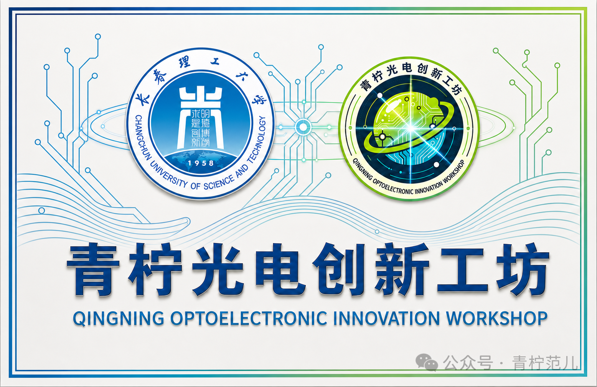
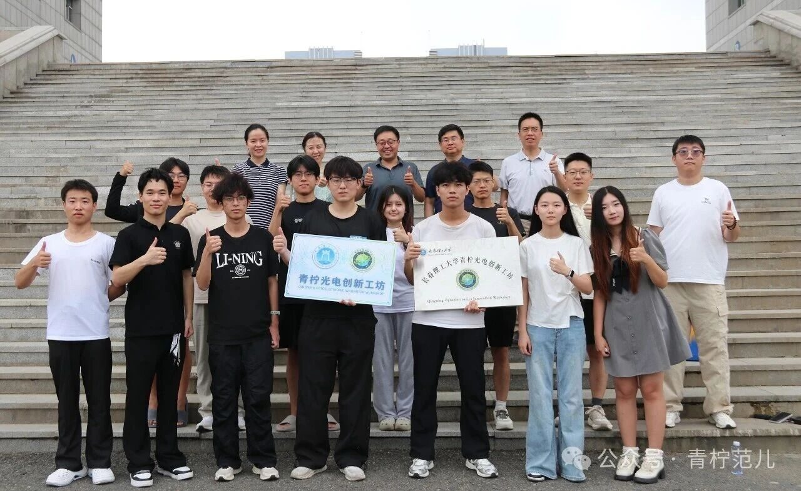
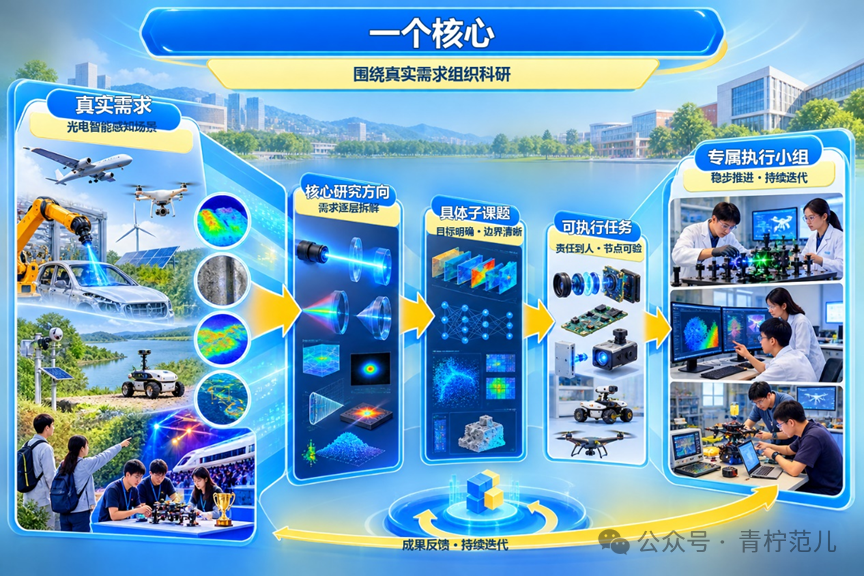
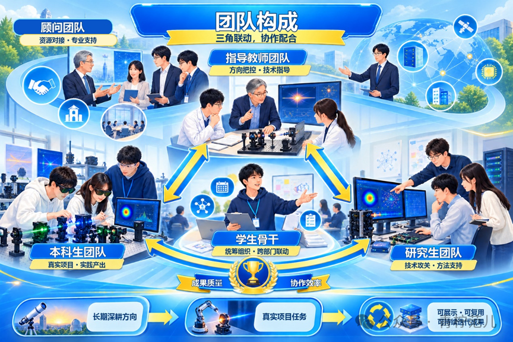
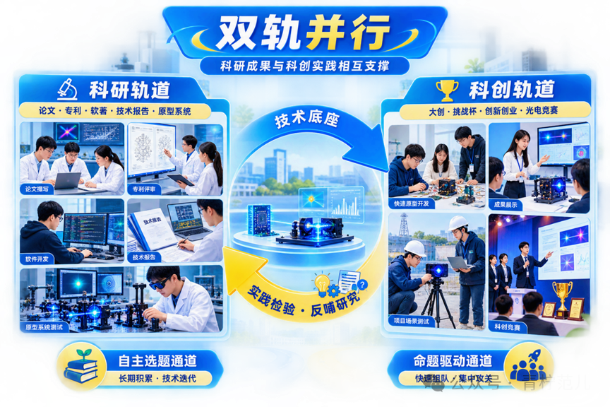
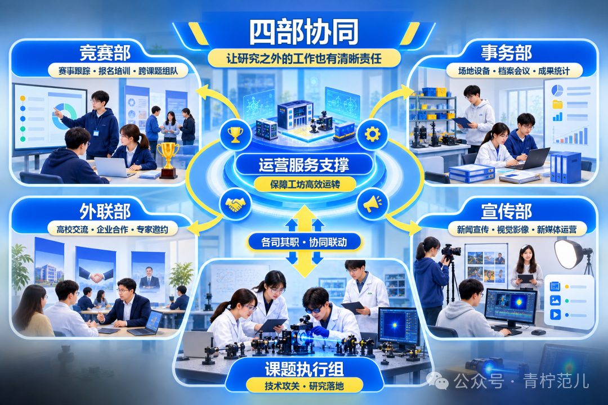
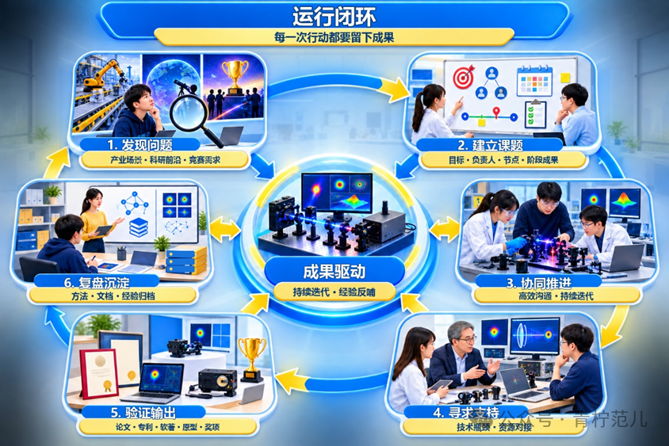
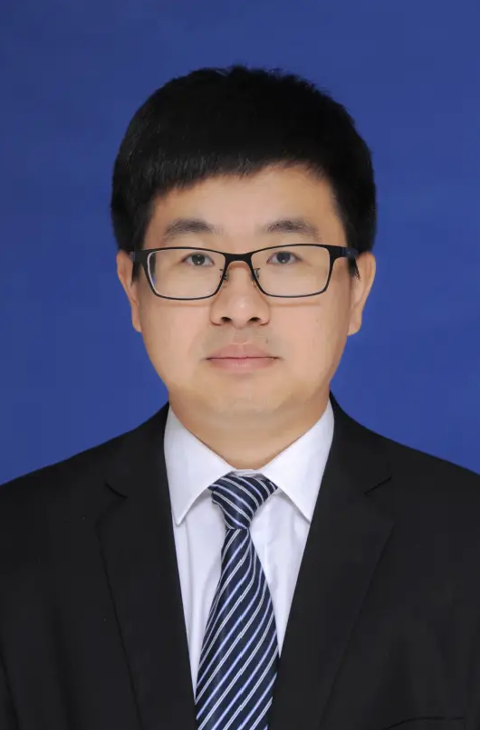
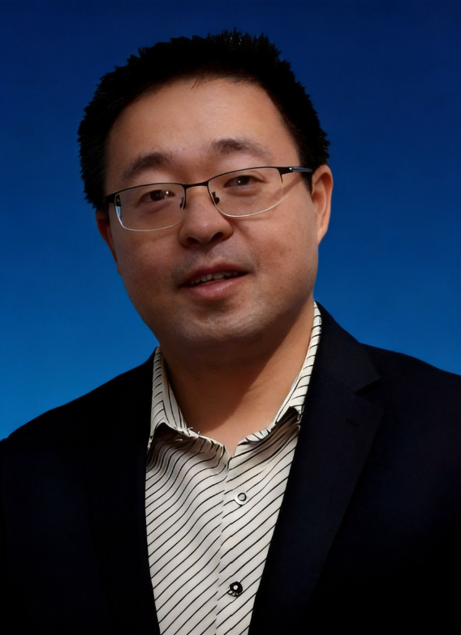

面向光电智能感知领域真实需求的青年创新实践平台——教师牵头指导、研究生协同推进、本科生深度参与。
青柠光电创新工坊，是面向光电智能感知真实需求、以学生为主体的科研科创实践平台。工坊依托教师团队多年沉淀的光电智能感知技术，推动其与具身智能、机器视觉、边缘计算等产业场景深度融合。
我们的主目标清晰而明确：赋能机器人在复杂环境下看得见、看得清、看得懂，基于感知信息实现精准决策与自主行动。
工坊采用科研与科创双轨并行模式，锚定重点研究方向、落地多元子课题，发挥跨年级协同优势，搭建起串联学生科研兴趣、教师技术储备与产业真实需求的桥梁。


2026 年 8 月 1 日，青柠光电创新工坊成立揭牌仪式暨研学主题党日活动在长春理工大学南校区举行，来自长春理工大学与北京理工大学的师生代表齐聚现场。
长春理工大学教务处副处长王文晶教授与北京理工大学曹杰教授共同为工坊揭牌，标志着这支青年创新队伍拥有了专属的实践阵地与成长平台。
当日下午，师生一行前往王大珩故居开展现场研学，在先生求学报国、科研攻关的事迹中完成了一场专业溯源的历史教育与精神传承。
查看活动全记录 →一个核心 · 三角协同 · 双轨并行 · 四部协同 · 六步闭环

工坊跳出"先搭架构、再找项目"的传统思路，从光电智能感知领域真实需求切入，将需求逐层拆解为核心研究方向、具体子课题及可执行任务，每个子课题配置专属执行小组稳步推进、持续迭代。

本科生进入真实课题场景，承担调研、实验、算法、工程实现与成果产出；研究生参与核心攻关并提供方法支持；教师把控研究方向、做出关键节点决策；顾问团队在战略规划、技术攻坚与创新创业方面提供专业支持。

科研轨道产出学术论文、发明专利、软件著作权、技术报告与原型系统；科创轨道征战大创、挑战杯、创新创业大赛与光电类竞赛。竞赛实战反过来检验技术落地、挖掘新的研究问题，双通道并行：自主选题重长期积累，命题驱动重集中攻关。

竞赛部、事务部、外联部、宣传部承担平台运营与服务支撑，保障工坊高效运转；课题执行组聚焦技术攻关与研究落地，二者各司其职、协同联动。

发现问题 → 建立课题 → 协同推进 → 寻求支持 → 验证输出 → 复盘沉淀。以成果驱动持续迭代，让研究方法、资料文档与实践经验沉淀归档，为后续课题与新成员培养提供支撑。
在研究方向规划、技术路线选型、科研科创实践及人才培养等方面提供专业指导


* 工坊指导教师与顾问团队还包括陈纯毅等教授，持续为工坊对接高层次科研科创资源。
不同年级成员围绕具体课题开展直接协作，在交流配合中共同成长。团队建设不以扩大成员规模为导向，而以课题研究成果质量和团队协作效率为核心。